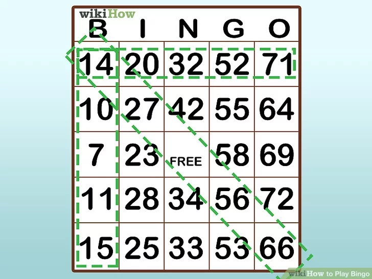

WebProgramozás - Csoport ZH
Tudnivalók
- A zárthelyi dolgozat kidolgozására 45 perc áll rendelkezésre, amely a feladatlap kiadásának pillanatától számítandó.
- Ezen felül további 5 perc adott a feltöltésre, minta értelmezésére, szöszölésre — így összesen valójában 50 perced van.
- Az elkészült munkát a tárgy Canvas felületén található, szöveg nélküli JavaScript csoport ZH feladathoz kell feltölteni egyetlen .zip állományként legkésőbb 18:50-ig!
- A kidolgozás során humán segítség kivételével bármilyen segédanyag (pl. órai kód, házi feladat, előadás) használható.
- A megoldások szigorú plágiumellenőrzésen esnek át — a feltűnően egyező megoldások szerzői kizárásra kerülhetnek az értékelésből!
- A zárthelyin összesen 10 pont szerezhető, minden részfeladat hibátlan megoldása egy-egy pontot ér! Minimálisan elérendő pontszám nincs.
Feladatok
- Kezdésnek töltsd le a kiindulási csomagot! Ebben megtalálható minden szükséges HTML és CSS állomány, amelyeket nem szükséges módosítanod a feladatok megoldása során. A README.md fájl kitöltésével készítsd el a nyilatkozatot. A nyilatkozat hiányában a számonkérés nem kerül értékelésre!
- A Generálás gombra kattintva rejtsd el a gombot tartalmazó controls divet! (1 pont)
- Ezzel egy időben jelenítsd meg az alábbi táblázatot, illetve a hozzá tartozó controls divet(1 pont):

- Generálj a táblázat minden cellájába egy 1-től 100-ig terjedő véletlen, egyedi számot. A táblázat közepén található cellába a "Free" szöveg kerüljön. (1 pont)
- A táblázat első sora rendre tartalmazza az alábbi betűket külön-külön cellában, keret nélkül: B I N G O (1 pont)
- A tábla egyes celláira kattintva az adott cella kapja meg a selected stílusosztályt! Ha a kattintáskor a cella már selected osztályú, akkor távolítsd el róla a stílust!
(1 pont)
- A húzás gombra kattintva generálj a korábbiakhoz hasonló véletlen számot. (1 pont)
- Amennyiben a generált szám már korábban kihúzásra került, úgy addig ismételd a húzást, amíg korábban nem listázott számot kapsz. (1 pont)
- A kihúzott számokat jelenítsd meg ;-al elválasztva a "numberlist" span-en belül (1 pont)
- Minden húzást követően ellenőrizd, hogy a kihúzott szám megtalálható-e a táblázatban, amennyiben igen, úgy kapja meg a selected stílusosztályt!(1 pont)
- Ellenőrizd minden húzás után, hogy az alábbi módok valamelyikén keletkezett-e BINGO, és felugró ablakban jelezd a játékosnak. (1 pont)
